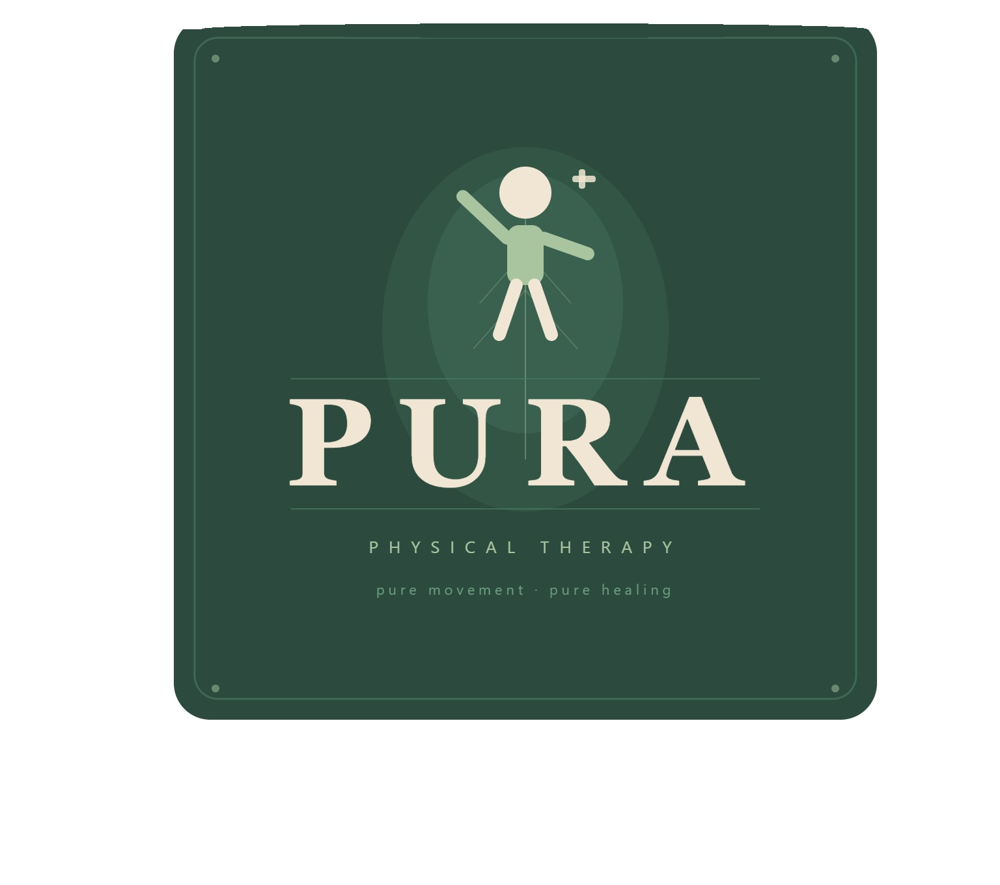

Outpatient orthopedic PT passionate about exercise prescription, manual therapy, and empowering patients through education.

Hi! I'm Nick — a physical therapist with 5 years of experience in outpatient orthopedic PT. I specialize in helping patients recover from surgeries, sports injuries, and musculoskeletal conditions so they can get back to doing what they love.
My approach is built around three things I'm genuinely passionate about: thoughtful exercise prescription, hands-on manual therapy, and making sure every patient truly understands their condition and recovery. I believe an informed patient is an empowered one — and that education is just as important as any technique in the clinic.
Have a question or want to connect? I'd love to hear from you.